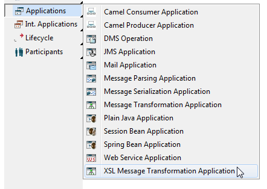
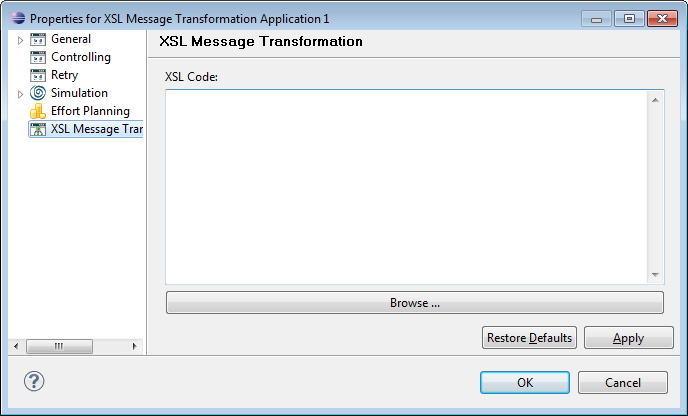
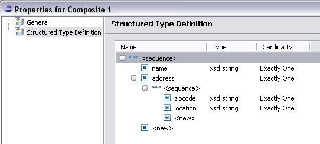
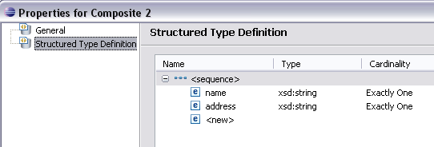
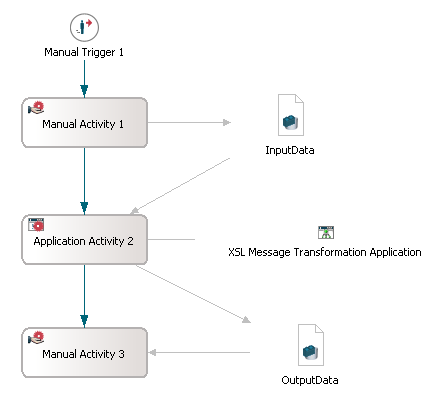
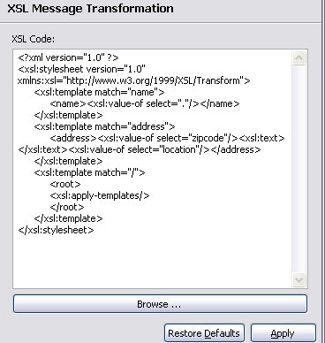
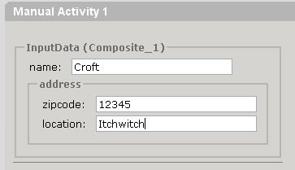
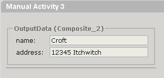
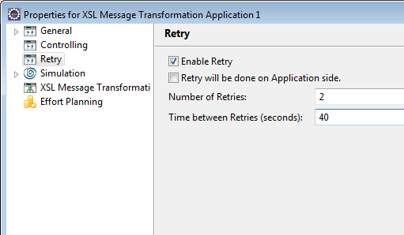

The XSL Message Transformation Application Type is used to perform XSL transformations on a single input and a single output message.
To create an XSL Message Transformation Application, select Application in the diagram toolbar palette and choose XSL Message Transformation Application:

Figure: Creating an XSL Message Transformation Application
In the XSL Code editor enter the xsl code, or select Browse to load a file with xsl code. This file content can then be edited in the XSL Code editor.

Figure: Properties of a Message Transformation Application.
This is a small example to demonstrate the mapping from an input message to an output message via XSL code within an XSL Message Transformation Application. If you are not familiar with setting up a dynamic Web project and deploying a model, please refer to the Rapid Application Development guide for a detailed description. For detailed information on structured data types, please refer to the chapter Structured Data Types.
In a dynamic Web project, we create a new model with two composite structured data types having each an attribute name with type xsd:string and an attribute address, which differs in definition. The first composite type defines the attribute address as anonymous, containing the elements zipcode and location, as shown in the following screenshot:

Figure: Composite Type 1
The second composite type defines the attribute address as of type xsd:string:

Figure: Composite Type 2
Now we create a model structure as shown in the following diagram:

Figure: Example Model Diagram.
whereby InputData is a structured data of the first composite type and OutputData is a structured data of the second composite type.
The InputData entered by the manual activity should be transformed to be mapped to the type of the OutputData. Thus, we enter the following XSL code in the XSL Message Transformation Application property page:
<?xml version="1.0" ?>
<xsl:stylesheet version="1.0" xmlns:xsl="http://www.w3.org/1999/XSL/Transform">
<xsl:template match="name">
<name><xsl:value-of select="."/></name>
</xsl:template>
<xsl:template match="address">
<address>
<xsl:value-of select="zipcode"/>
<xsl:text></xsl:text>
<xsl:value-of select="location"/>
</address>
</xsl:template>
<xsl:template match="/">
<root>
<xsl:apply-templates/>
</root>
</xsl:template>
</xsl:stylesheet>

Figure: XSL Code entered in Property Page.
To test the example, start your server, deploy your model and start the Workflow Execution Perspective. Starting the manual activity invokes the following entry field for InputData:

Figure: Entry Field for Composite Type 1.
Completing this activity will pass the values to the XSL Message Transformation Application and map these values to the OutputData format. The subsequent manual activity then displays the data in the new format:

Figure: Output Field with mapped Data.
The configurable retry mechanism provides the facility to retry an operation in case the target service is temporarily unavailable.
For more information, please refer to Retry Mechanism of Non-interactive Applications section of the Applications Concept chapter.
If you enable the Retry functionality for an XSL Message Transformation application, you have to define the number of retries and the time between retries in seconds. Note that the maximum number of retries is 10 and the maximum time between retries is restricted to 60 seconds. Additionally you can enable the retry to be performed on application side and thus disable a retry on engine side.

An application with an enabled retry functionality will retry for the defined number of times with a pause of the defined number of seconds, until it succeeds. If the application still fails after the defined number or time, it will no longer retry.